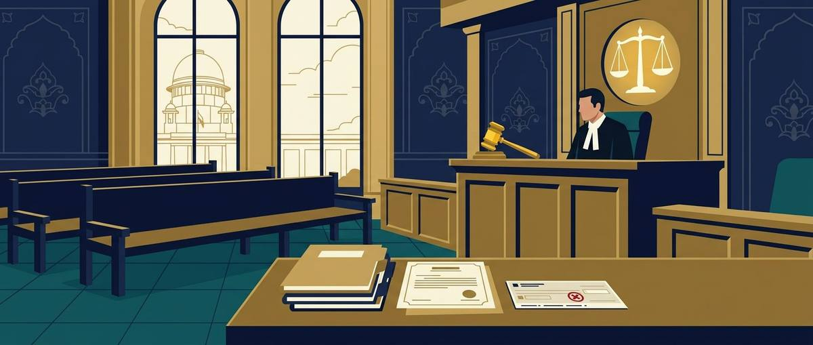
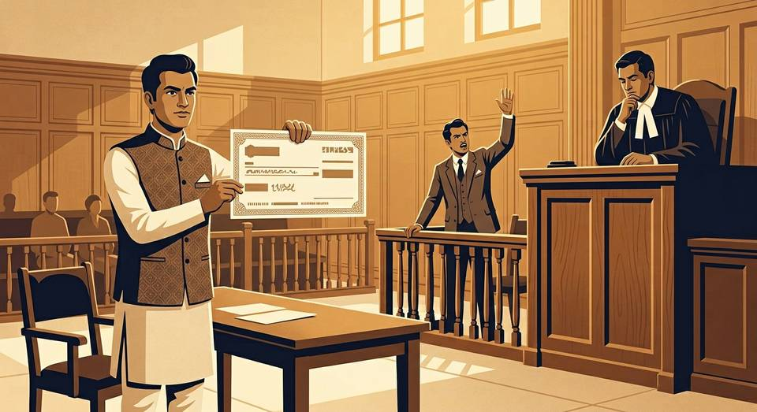

| Question | Position |
|---|---|
| Is a summary suit a different kind of "suit"? | No. It is an ordinary suit tried by a special procedure. Rule 7 keeps the ordinary procedure alive "save as provided by this Order". |
| Is the decree special? | No. It is a decree under s. 2(2); a first appeal lies under s. 96. Where leave to defend has been refused, the decree follows "almost automatically" (Settled Mahomedan Law). |
| Does O.37 affect jurisdiction? | No. "A suit by summary jurisdiction provided by O.37 r.2(1) does not mean that court is not competent to try that suit if it is otherwise within its jurisdiction" (citing Prayag Deb). |
| Is the defendant arrestable? | A defendant in a summary suit is privileged from arrest even though he has not obtained leave to defend (exemption from arrest of parties). |
| Plaintiff's option | Summary procedure is optional — "if the plaintiff desires to proceed hereunder" (R.2(1)). A plaintiff entitled to it may always file an ordinary suit instead. |
The classical core of the Order — suits on negotiable instruments where the document itself is the debt. Santosh Kumar (dishonoured cheque of ₹60,000) and Mechalec (dishonoured cheque of ₹21,265.28) both belong to this class.
Procedural note: instituting under O.37 R.2(1) has no bearing on the jurisdiction of the court or on the nature of the suit — if a court of the lowest grade lacks summary jurisdiction, that does not make it incompetent to try the suit if otherwise within its jurisdiction.
The summons is in Form No. 4, Appendix B (or a prescribed alternative). Appendix B Form 4 warns the defendant, in substance, that he must appear within ten days of service, that in default the allegations in the plaint will be deemed to be admitted and a decree may be executed forthwith — the summons thus carries the entire coercive logic of the Order (cf. bare Act, Appendix B).
| Sub-rule | Requirement | Detail / significance |
|---|---|---|
| R.3(1) | Service of plaint copy + 10 days to appear | Plaintiff must serve the plaint and annexures with the summons; defendant appears in person or through pleader and files an address for service. The 10-day window is rigid but condonable under R.3(7). |
| R.3(2) | Deemed service | Process left at the address given by the defendant is good service — he cannot hide behind his own default. |
| R.3(3) | Notice of appearance to plaintiff | Same-day intimation to the plaintiff(’s pleader) — triggers the plaintiff's duty to issue the summons for judgment. |
| R.3(4) | Summons for judgment (Form 4-A) | The plaintiff's affidavit must (i) verify the cause of action, (ii) verify the amount claimed, and (iii) state his belief that there is no defence. Rule An ex parte decree passed without issuing summons for judgment (and without the R.3(4) affidavit) is liable to be set aside. |
| R.3(5) | Application for leave to defend | Within 10 days of service of the summons for judgment; by affidavit or otherwise disclosing sufficient facts. Leave: unconditional or on just terms. Twin provisos: (i) refusal only for want of substantial defence / frivolous-vexatious defence; (ii) deposit of admitted amount is a condition precedent. |
| R.3(6) | Hearing & outcomes | (a) No application / refused → judgment forthwith; (b) leave granted → court may fix security and time; failure to comply → judgment forthwith. |
| R.3(7) | Condonation | Court may excuse delay in appearance or in applying for leave for sufficient cause. |
| Feature | Pre-amendment (as in Santosh Kumar / Mechalec) | Post-amendment, w.e.f. 1-2-1977 |
|---|---|---|
| Structure | R.3(1): Court shall give leave on affidavits disclosing facts which would make it incumbent on the holder to prove consideration, or other sufficient facts. R.3(2): leave unconditional or on such terms as to payment into court, giving security, framing/recording issues or otherwise. | R.3(1)–(7): a full procedural code — service, appearance, address, summons for judgment with affidavit, 10-day leave application, hearing outcomes, condonation. |
| Refusal of leave | No statutory standard; judge-made tests (Kiranmoyee Dassi, Santosh Kumar). | First proviso: refusal only if facts do not indicate a substantial defence or defence is frivolous or vexatious. |
| Admitted amount | No compulsion to deposit as a condition precedent. | Second proviso: deposit of the admitted amount is a condition precedent to grant of leave (Southern Sales & Services). |
| Effect on case-law | Mechalec propositions (a)–(e) applied to the unamended rule. | Para 8 of Mechalec now superseded; six new principles in IDBI Trusteeship (2016). |
But where the triable point is purely a question of law not dependent on facts to be investigated, no leave is needed — the court may decide the point at once (Universal Law Series).
Smt. Kiranmoyee Dassi v. Dr. J. Chatterjee, (1945) 49 CWN 246 = AIR 1949 Cal 479 (Das, J.) — as extracted in the DU case material within Mechalec:
| Class | Nature of defence disclosed | Consequence |
|---|---|---|
| (a) | Good defence to the claim on its merits | Plaintiff not entitled to sign judgment; defendant entitled to unconditional leave. |
| (b) | Trible issue raised — fair / bona fide / reasonable defence though not positively good | Plaintiff not entitled to sign judgment; unconditional leave. |
| (c) | Facts disclosed lead to the inference that a defence may possibly be established at trial | Leave granted, but conditions may be imposed as to time or mode of trial only — not as to payment into court or furnishing security. |
| (d) | No defence, or illusory / sham / "practically moonshine" defence | Ordinarily, plaintiff entitled to sign judgment; no leave. |
| (e) | No defence or sham/moonshine — but court shows mercy | Court may protect the plaintiff by conditional leave — defence allowed to proceed only if the amount claimed is paid into court or otherwise secured. |
Milkhiram (India) (P) Ltd. v. Chamanlal Bros., AIR 1965 SC 1698 (bench of four) construed the Bombay amendment of O.37 R.2 — textually the ancestor of today's R.3(4)–(6) — and held:
In IDBI Trusteeship, Nariman J. identified Milkhiram as "a direct authority on the amended O.XXXVII provision" — since the central amendment of 1976 reproduced the Bombay text — though the two provisos to sub-rule (5) were "new".
Nariman, J. held that "the principles stated in paragraph 8 of Mechelec's case will now stand superseded, given the amendment of O.XXXVII R.3, and the binding decision of four judges in Milkhiram's case", and restated the law as:
| Point | Order IX Rule 13 (ordinary suit) | Order XXXVII Rule 4 (summary suit) |
|---|---|---|
| Who may apply & when | Defendant against whom a decree is passed ex parte; on grounds of non-service or sufficient cause for absence. | Defendant against whom a decree is passed (typically on default of appearance, non-application for leave, refusal of leave, or non-compliance with conditions). |
| Standard | Summons not duly served, or prevented by sufficient cause from appearing when the suit was called on for hearing. | Special circumstances — a higher, exceptional standard ("unusual or extraordinary"). |
| Must the defence be shown? | No — the setting-aside and the defence are separate; the suit then proceeds "as if no ex parte decree had been passed". | Yes — must also disclose facts entitling him to leave to defend, in the same application (Rajni Kumar). |
| Reliefs | Set aside decree; terms as to costs or payment into court. | Set aside decree + stay/set aside execution + leave to appear & defend — all in one application. |
| Governing logic | General procedure — participation is the norm. | Rule 7 saves ordinary procedure only "save as provided by this Order"; because R.4 specifically provides for setting aside, O.9 R.13 will not apply to a suit filed under O.37. |
In any proceeding under the Order, the court may order the bill, hundi or note on which the suit is founded to be forthwith deposited with an officer of the court, and may further order that all proceedings be stayed until the plaintiff gives security for costs.
Rationale: the instrument is both the debt and the evidence; its custody prevents manipulation and protects the defendant's right to inspect the original.
The holder of every dishonoured bill of exchange or promissory note has the same remedies for recovering the expenses of noting the instrument for non-acceptance or non-payment (or other expenses by reason of dishonour) as he has under the Order for recovering the amount of the bill or note itself.
"Save as provided by this Order, the procedure in suits hereunder shall be the same as the procedure in suits instituted in the ordinary manner."
| Dimension | Ordinary suit | Summary suit (O.XXXVII) |
|---|---|---|
| Right to defend | Defendant may appear and defend as of right. | Defence only with the court's leave, sought within 10 days (R.3(5)). |
| Consequence of default | Ex parte proceedings under O.9; decree set aside under O.9 R.13. | Allegations deemed admitted; decree forthwith (R.2(3), R.3(6)); setting aside only under R.4 for special circumstances — O.9 R.13 excluded. |
| Power of trial court over its own decree | Cannot set aside its decree except on review. | Can set aside the decree under special circumstances (R.4) — a deliberate safety-valve. |
| Written statement | Filed as of right within 120/90 days (O.8 R.1). | No written statement unless leave to defend is granted; facts disclosed by affidavit. |
| Classes of claims | Any civil claim. | Only R.1 classes: bills/hundies/notes; debt or liquidated demand on written contract, enactment (non-penalty), guarantee. |
| Speed | Full trial. | Immediate decree where no substantial defence — "quick relief" for commercial causes. |
Indian Bank v. Maharashtra State Co-operative Marketing Federation Ltd., AIR 1998 SC 1952 (in the DU case material under Section 10): the Federation had earlier filed an ordinary suit for recovery of ₹3.70 crore; the Bank later filed a summary suit for ₹4.96 crore on an irrevocable letter of credit. Could s.10 stay the summary suit as a "subsequently instituted suit"?
| No. | Case | Focus | Outcome in one line |
|---|---|---|---|
| 19 | Santosh Kumar v. Bhai Mool Singh, AIR 1958 SC 321 | Trible issue → unconditional leave; limits of conditions | Conditional leave set aside; remanded for trial |
| 20 | M/s Mechalec Engineers v. Basic Equipment Corpn., AIR 1977 SC 577 | Kiranmoyee principles; s.115 revisional restraint | HC's conditional leave quashed; trial court's unconditional leave restored |
| 21 | ONGC Ltd. v. State Bank of India, AIR 2000 SC 2548 | Bank guarantee defence in a summary suit | Unconditional leave vacated; leave refused — guarantee autonomous |
| 22 | IDBI Trusteeship Services Ltd. v. Hubtown Ltd., [2016] 11 SCR 660 | Post-1976 restatement of leave-to-defend law | Unconditional leave converted to conditional — deposit/security of ₹418 crore |
| S1 | Milkhiram (India) (P) Ltd. v. Chamanlal Bros., AIR 1965 SC 1698 | 4-judge bench; terms despite triable issue | Conditional leave upheld; time to deposit extended |
| S2 | Rajni Kumar v. Suresh Kumar Malhotra, 2003 (3) SCALE 434 | Rule 4 anatomy (DU Topic 12) | Refusal of relief upheld — no defence disclosed; interest reduced |
| S3 | Indian Bank v. Maharashtra S.C. Marketing Federation, AIR 1998 SC 1952 | S.10 vs O.37 (DU Section 10 topic) | Summary suit not stayed; "trial" begins after leave |
| S4 | Kiranmoyee Dassi v. Dr. J. Chatterjee, AIR 1949 Cal 479 | Source of propositions (a)–(e) | Foundation of all later O.37 doctrine |

The only question before the Supreme Court: "Could the High Court interfere in exercise of its powers under Section 115, Civil Procedure Code, with the discretion of the Additional District Judge, in granting unconditional leave to defend to the defendant-appellant upon grounds which even a perusal of the order of the High Court shows to be reasonable?"
Having found that the affidavit disclosed a triable issue, was the trial judge obliged to grant unconditional leave — or could security be demanded? And is the claim maintainable as a summary suit at all?
Whether the High Court committed jurisdictional error in declining to set aside the ex parte decree under Rule 4 on the ground that the appellant failed to disclose facts sufficient to entitle her to defend.
Whether the bar against proceeding with the trial of a subsequently instituted suit in Section 10 applies to a summary suit filed under Order XXXVII.
After "a comprehensive review of authorities", Das J. stated the principles applicable to O.37 suits as five propositions (a)–(e) — reproduced verbatim in Mechalec (see Section 5.3) and treated by the DU PYQ book as the backbone of the leave-to-defend answer. The Division Bench of the Delhi High Court in Hiralal & Sons v. Luxmi Commercial Bank (1984) 25 DLT CSN 33 reaffirmed these propositions.
Remember as: good defence → (a); triable issue → (b); possible-defence facts → (c) [conditions on trial only]; no defence/moonshine → (d) [judgment]; mercy → (e) [pay-or-no-defence].
A partition suit (Dayabhaga family, Jabalpur) in which a defendant was set ex parte during the evidence stage; her O.9 R.13 application failed, and the question arose whether she could still appeal under s.96(2).
Held: the right of appeal against an original decree passed ex parte under s.96(2) is a statutory right — the defendant cannot be deprived of it merely because the O.9 R.13 application was earlier dismissed. The decision maps the full remedial ladder against ex parte decrees (O.9 R.13 → s.96(2) appeal → review → suit on fraud) — with O.37 R.4 replacing the first rung for summary decrees (Rajni Kumar).
| Case | Take-away |
|---|---|
| Raj Duggal v. Ramesh Kumar Bansal, AIR 1990 SC 2218 | Test: real, honest, bona fide dispute raising a triable issue; leave should not be refused; implausibility/inconsistency alone is no ground for summary judgment. |
| State Bank of Saurashtra v. Ashit Shipping Services (P) Ltd., (2002) 4 SCC 736 | Document was an indemnity bond, not a guarantee — summary suit not maintainable because loss must first be proved; leave granted. |
| Defiance Knitting Industries (P) Ltd. v. Jay Arts, (2006) 8 SCC 25 | Three principles on the amended R.3: triable issue → ordinarily unconditional; no substantial/frivolous defence → refuse; genuine doubt → conditions. |
| Southern Sales & Services v. Sauermilch Design & Handels GMBH, (2008) 14 SCC 457 | Second proviso: deposit of admitted amount is now a condition precedent to leave. |
| Ramkarandas v. Bhagwandas, AIR 1965 SC 1144 | S.151 inherent power cannot be used to set aside an O.37 decree — only R.4's special-circumstances route. |
| Ethirajulu v. Panikkar, AIR 1957 Mad 572 | R.4 powers wide enough to cover both non-service and sufficient cause for non-appearance. |
| Punjab & Sindh Bank v. Ram Prakash Jagdish Chandler, (1992) BC 471 (Del) | Defence never taken before the suit raises no triable issue; leave refused. |
| Wada Arun Asbestos (P) Ltd. v. Gujarat Water Supply & Sewerage Board, (2009) 2 SCC 432 | Condition imposed on leave = jurisdictional question → revision u/s 115 maintainable. |
| Prayag Deb v. Rama Roy, AIR 1977 Cal 1 (FB) | O.37 provisions are rules of procedure; they do not alter the nature of the suit or the court's jurisdiction. |
| Series of cases following Mechalec (per IDBI): MCD v. Suresh Chandra Jaipuria (1976); Sunil Enterprises (1998); SB Saurashtra (2002); Uma Shankar Kamal Narain (2007); SIFY (2008); Wada Arun Asbestos (2009); Saravana Prabhu (2013); SB Hyderabad v. Rabo Bank (2015) | The continuing vitality of Mechalec's framework — until para 8 was superseded in 2016. |
Order XXXVII provides for summary procedure. A summary suit is one in which the defendant is not entitled, as a matter of right, to defend the suit, as in ordinary suits. He must apply for the court's leave to defend within the prescribed time (ten days from service of the summons for judgment — R.3(5); Art. 118, Limitation Act), and such leave is not granted if the defendant does not disclose facts indicating a substantial defence, or if his defence is frivolous or vexatious. Leave may be granted unconditionally or on such terms as the court deems just; if no leave is granted, the plaintiff is entitled to a decree.
The object of summary procedure is to prevent unreasonable obstruction by a defendant who has no valid defence and to secure the expeditious disposal of suits. Speedy decision is desirable "in the interests of trade and commerce" (Santosh Kumar, Bose J.).
Leave should be granted where there is a triable issue, i.e. — (a) a fair dispute to be tried as to the meaning of the document on which the claim is based; (b) uncertainty as to the amount actually due; (c) facts entitling the defendant to interrogate the plaintiff; or (d) to cross-examine his witnesses. Summary judgment should not be granted where there is a serious conflict as to matters of fact or difficulty on issues of law; the defence should not be rejected merely for inherent implausibility or inconsistency (Raj Duggal v. Ramesh Kumar Bansal, AIR 1990 SC 2218).
In Mechalec the case did not fall within class (e); only in that class is a deposit condition justifiable.
Mechalec remains the leading exposition of the leave-to-defend framework and of revisional restraint. However, after the 1976 amendment (w.e.f. 1-2-1977) substituted Rule 3, the Supreme Court in IDBI Trusteeship Services Ltd. v. Hubtown Ltd. (2016) held that the propositions in paragraph 8 of Mechalec stand superseded: today, even where triable issues are raised, conditions (including deposit/security) may be imposed if the judge doubts the defendant's good faith; a "plausible but improbable" defence may attract conditions up to the entire principal with interest; and the admitted amount must in any case be deposited (second proviso; Southern Sales). A complete answer states Mechalec and then notes IDBI Trusteeship.
Issue: whether a defendant to a 1995 summary suit on a dishonoured cheque, who claims that his defence raises a "triable issue", is entitled as of right to unconditional leave to defend.
Yes — but only conditionally on the quality of his defence: Mr. B will get unconditional leave if (and only if) his affidavit discloses a substantial defence or genuine triable issues and no part of the claim is admitted; a mere label of "triable issue" without disclosing supporting facts will not do. Where doubt exists as to good faith, the court may impose conditions; where the defence is sham, leave is refused altogether.
In a summary suit the defendant has no right to defend; he applies for leave (R.3(5)). A triable issue is a question of fact or law raised by the defendant's affidavit which, if resolved in his favour at a trial, would constitute a defence — i.e., the issue is fit for judicial investigation in the ordinary course rather than fit for summary elimination.
Conversely: a pure question of law not dependent on facts may be decided at once without leave (ULS); a defence never taken before the suit raises no triable issue (Punjab & Sindh Bank, Del); an indemnity claim requiring proof of loss is outside O.37 altogether (SB Saurashtra v. Ashit Shipping).
| Law | Result of a triable issue |
|---|---|
| Pre-amendment (Santosh Kumar, Mechalec classes (a)–(b)) | Unconditional leave as of course; conditions only in class (e) (sham defence + mercy). |
| Post-amendment (Milkhiram, Defiance Knitting, Southern Sales, IDBI Trusteeship principles 2–3) | Ordinarily unconditional; but with genuine doubt about good faith, conditions as to time/mode of trial, deposit or security are permissible; admitted amounts must be deposited first. |
The triable-issue concept is the hinge of Order XXXVII: it separates the defendant who deserves a trial from the one who deserves a decree against him, while the conditioning power (post-1976) lets the court calibrate protection to the quality of the defence — "care must be taken to see that real and genuine triable issues are not shut out by unduly severe orders as to deposit" (Milkhiram; IDBI).
Remedies against an ex parte decree (as listed in the DU PYQ book): (1) application under O.9 R.13 within 30 days of the decree (or of knowledge where summons were not duly served); (2) appeal under s.96(2) — a statutory right not lost by dismissal of the O.9 R.13 application (Bhanu Kumar Jain v. Archana Kumar, AIR 2005 SC 626); (3) review under s.114 / O.47; (4) a regular suit on fraud; and, for decrees on non-service, recourse in appropriate cases.
The summary-suit overlay: where the decree has been passed under Order XXXVII (on default of appearance, non-application for leave, refusal of leave, or breach of conditions), the proper remedy is Rule 4 of Order XXXVII, not O.9 R.13 — because R.4 specifically provides for setting aside such decrees (R.7). In Rajni Kumar v. Suresh Kumar Malhotra (2003), the SC held: relief is available only under special circumstances (non-service of summons being a clear example); all reliefs — setting aside the decree, staying/setting aside execution, and leave to appear and defend — must be claimed in one application; and the applicant must also disclose facts showing a defence, failing which the decree stands (as happened to the tenant-appellant there, whose interest was however reduced from 18% to 6% under s.34 since the liability was not commercial). The High Court's refusal to set aside was upheld for want of any disclosed defence.
Section 10 bars the court from proceeding with the trial of a subsequently instituted suit where the matter in issue is also directly and substantially in issue in a previously instituted suit between the same parties, in a court competent to try both. The test of applicability: whether the decision in the earlier suit would operate as res judicata in the later one (SPA Annamalay Chetty v. B.A. Thernhill). It is a rule of procedure — not a bar on jurisdiction, institution, or interlocutory orders.
The summary-suit exception (Indian Bank v. Maharashtra State Co-op. Marketing Federation, AIR 1998 SC 1952 — the DU case material's illustration): the Bank's summary suit on an irrevocable letter of credit was later in time than the Federation's ordinary recovery suit. Holding that s.10 did not require the summary suit to be stayed, the SC reasoned that "in a summary suit the 'trial' really begins after the Court or the Judge grants leave to the defendant to contest the suit" — the court may therefore proceed up to the hearing of the summons for judgment and pass judgment where leave is not sought/refused or conditions are broken. The Division Bench's contrary view (relying on Harish Chandra — an election-law case) was set aside. Write this case whenever s.10 and O.37 intersect.
| Item | Value |
|---|---|
| Appearance after service | 10 days — R.3(1) |
| Summons for judgment returnable | not less than 10 days — R.3(4) |
| Application for leave to defend | 10 days from service of summons for judgment — R.3(5); Art. 118 Limitation Act |
| Demand under corporate guarantee (IDBI facts) | 5 business days |
| Amendment of the Order | Act 104 of 1976, w.e.f. 1-2-1977 |
| Forms | Summons: Form 4, App. B; Summons for judgment: Form 4-A, App. B |
| Santosh Kumar cheque | ₹60,000 |
| Mechalec claim | ₹21,265.28 + ₹7,655 |
| ONGC guarantee / claim | US $6,387,500 + ₹8,060,000 / US $4,320,432 + ₹55,15,959 |
| IDBI claim / deposit ordered | ₹532.11 crore / ₹418 crore in 3 months |
| Milkhiram claim / security | ₹4,05,434.38 / ₹70,000 |
| Rajni Kumar suit | ₹33,661 (electricity + water charges); interest cut 18% → 6% |
| Case (year) | Provision / point | Principle in one line |
|---|---|---|
| Jacobs v. Booth's Distillery (1901, HL) | Foundation | Trible issue → leave; and unconditionally, else illusory. |
| Kiranmoyee Dassi (1945 Cal) | Old R.3 | Five propositions (a)–(e) on the defence-outcome mapping. |
| Santosh Kumar (1958 SC) | R.3 leave; conditions | Real (not sham) issue → unconditional leave; proof stage post-leave; conditions only for speedy trial. |
| Milkhiram (1965 SC, 4JJ) | Amended rule | Pleadings-only assessment; sham/fantastic or plausible-but-improbable → terms; severe deposits discouraged. |
| Mechalec (1977 SC) | s.115 + leave | Kiranmoyee (a)–(e) approved; deposit only class (e); HC cannot retry bona fides pre-evidence. (¶8 superseded by IDBI, 2016.) |
| Raj Duggal (1990 SC) | Leave test | Real, honest, bona fide dispute = triable issue → leave not refused. |
| Indian Bank (1998 SC) | S.10 × O.37 | Summary "trial" begins after leave; s.10 does not bar the preliminary stages. |
| ONGC v. SBI (2000 SC) | Guarantee defence | Unconditional guarantee autonomous; no leave for arbitration/counter-guarantee/foreign-injunction defences absent fraud. |
| Rajni Kumar (2003 SC) | R.4 | Special circumstances + disclosed defence in one application; O.9 R.13 excluded. |
| Bhanu Kumar Jain (2005 SC) | s.96(2) | Appeal against ex parte decree is a statutory right, survives failed O.9 R.13. |
| Defiance Knitting (2006 SC) | Amended R.3 | Three principles: triable → ordinarily unconditional; none → refuse; doubt → conditions. |
| Southern Sales (2008 SC) | 2nd proviso | Deposit of admitted amount = condition precedent to leave. |
| SB Saurashtra v. Ashit Shipping (2002 SC) | R.1(2)(iii) | Indemnity ≠ guarantee; no summary suit where loss must first be proved. |
| IDBI Trusteeship v. Hubtown (2016 SC) | R.3 (amended) | Six principles; Mechalec ¶8 superseded; plausible-but-improbable → deposit/security of entire principal (₹418 cr). |